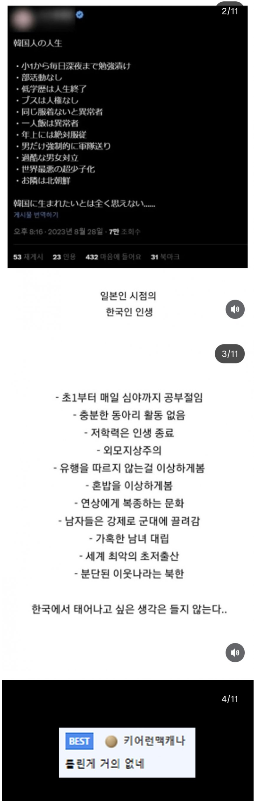

일본인 시점에서 본 한국인의 인생
댓글
외모지상주의가 개소리까진 아닌 거 같은데..... 물론 극복할 수는 있지만 한국이 좀 심한 건 사실 아님?
00년대면 몰라도 지금이 무슨 외모지상주의임
아이돌 중에서도 평범한 애들 여럿있고 유튜버만 봐도 못생겼거나 평범한 애들 중에 잘나가는 애들 수두룩한데
애초에 외모 안 보는 나라가 어딨음 외모 보는건 인간특이고 본능임
하..
분석력 하나는 역시 일본인이라니깐
그런 일본은..?
일본이 사회나오면 더가혹함
비겁하게 팩트로 패네
신기하게도 딱히 다른나라에서 태어나고 싶진 않음 ㅋㅋㅋ
일본에서 살아도 좋았을거같음 미세먼지, 관광지로 삶의 질 압살
물 민영화 전기 민영화 열차 민영화 겨울에 춥고 카드세액 공제없고 건보연금 한달 20정도 떼가는거 감당할수있으면 좋겠더라고
그나마 혼밥은 이제 별 신경 안쓰지 않나?
니들이 아프리카에서 태어나든 미국에서태어나든 똑같을거같아?
초1부터 심야까지 공부 = 극소수
저학력은 인생 나락 = 개소리
외모지상주의 = 개소리
연상에게 복종하는 문화 << 이건 지들도 통용되는거 아닌가ㅋㅋ
나머진 다 공감함